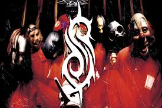
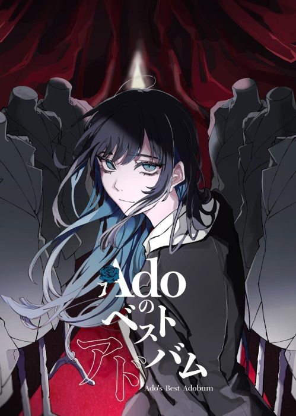
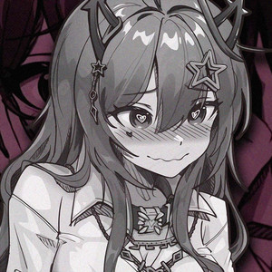
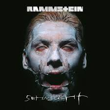
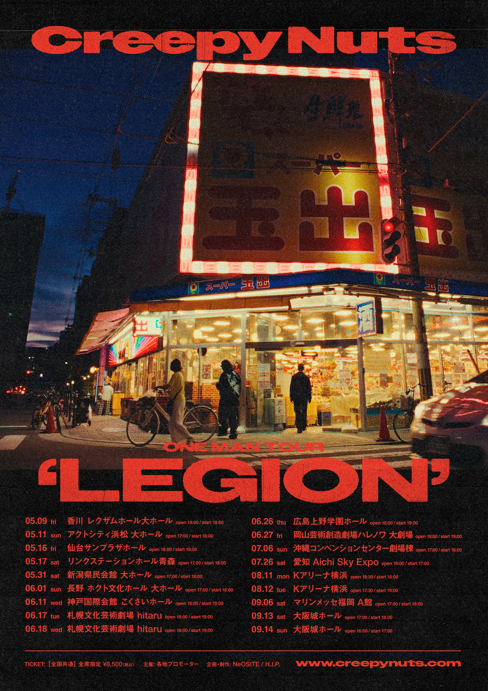

Hudba
Něco málo o hudbě, kterou poslouchám
Oblíbení interpreti
-

Slipknot Spotify -

Ado Spotify -
 Morčata na útěku
Spotify
Morčata na útěku
Spotify
-
 CottontailVA
Spotify
CottontailVA
Spotify
-
 KEssoku Band
Spotify
KEssoku Band
Spotify
-

Nihmune Spotify -

Rammstein Spotify -

Creepy Nuts Spotify
Mé oblíbené písně
- Slipknot-custer, people=shit, psychosocial, eyless, custer
- Ado - Aishite, Usewa, Rule, Odoru Ponpokorin
- Morčata na útěku- twajlajt, rodinná pouta, di do prdele, závit
- CottontailVA - Hatef--k, A Match Into Water, I Like the Way You Kiss ME, I'm So Sick
- Horkýže Slíže- Rampa, Mám v p... na lehátku, Vlak, Tvojho brata brat má brata, Atomový kryt
- Kessoku Band- Guitar Loneliness and Blue Planet, Seisyun complex, That band
- Nihmune- Scatterbrained, Dirty thoughts
- Rammstein- Dicke Titten, Deutchland, Pussy
- Creepy Nuts- Otokone, Bling-Bang-Bang-Born
- Kiss of death - Mika Nakashima, DEAREST DROP, Get Jinxed, Miku, Caramelldansen
Můj Spotify playlist
- Nemám žádný oblíbený žánr, ale nejvíce asi převažuje v mojich playlistech buď metal a nebo japonský pop-rock.
- V minulosti jsem hrál na klávesy a i přes skutečnost, že už nehraji aktivně, tak si na ně občas rád zahraji.
- Hudba je můj psycholog. Je rozmanitá a chaotická stejně jako já.